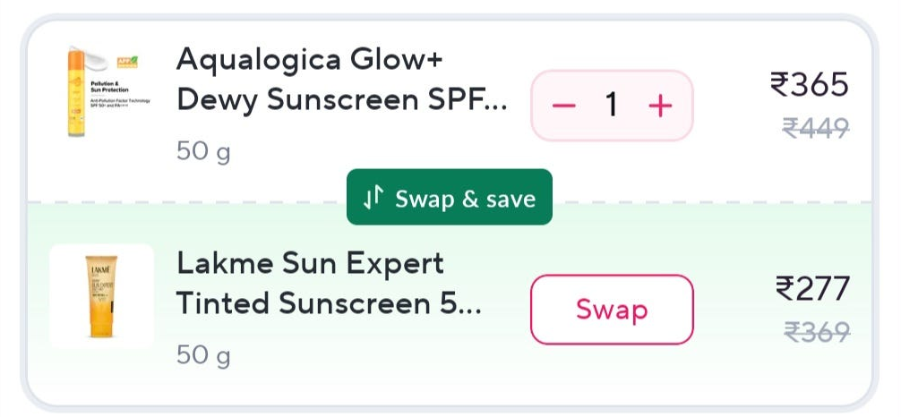

Direct precedent
Zepto · Swap & Save

- What it proves
- A lower-priced alternative can appear beside an item already in the cart, so the customer can make the change without starting a new search.
- Scope
- The pattern is tied to one specific item and one clear reason: paying less.